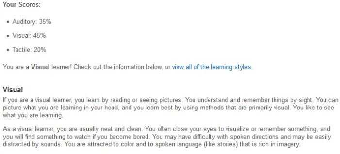
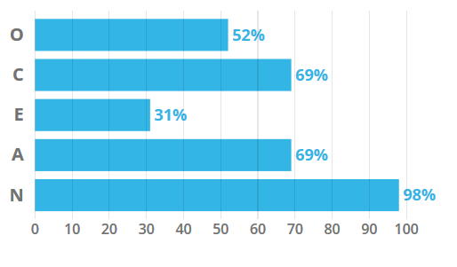

Meet The Team
Aaron Balkin
- s3819878
Aaron Balkin is an aspiring entrepreneur looking to make it in the IT world. He is from regional Queensland; a small town called Beaudesert. Currently he resides in the Brisbane area where he works as a Patient Support Officer at the Royal Brisbane and Women's Hospital while he completes his studies at RMIT. Aaron is also a tech enthusiast showing a strong interest in mobile technology, cryptocurrency and blockchain technologies.
Test Outcomes:
Myers-Brigg: Commander ENTJ-T, Extrovert
Commanders are natural born leaders. Commanders tend to be led with great charisma and confidence which can draw a team behind a common goal. Commanders also tend to be judged by others a ruthless individual that uses their drive and determination to achieve their goal. Aaron does see himself has a natural born leader as he likes to contribute as much as he can and take control when others cannot. Like most commanders he is also an extrovert, which enables him to more sociable and quite likeable among groups and teams.
Learning Style: Visual Learning Style
According to the learning test, Aaron is a visual learner and prefers to learn from material that can be viewed graphically. A visual learner or a spatial learner prefer to use images, videos and pictures to organise information and to communicate with the team.
The Big 5 personality test: Openness Test.
The Big Five Personality Test is a test based on someone's ability to think in abstract and complex ways. Much like the Myers-Brigg test, the big 5 personality test showed that Aaron exceeded at being an extrovert. However, when it came to Aaron being ranked in openness, it scored him lower at 56% where the average is scored at 58%. While this test is quite accurate, it also showed that Aaron was more of a concrete thinker than an abstract thinker.
Andrew Bonney
- s3529361
Andrew Bonney is a part-time student at RMIT both on-campus and online study, his Student Number being s352936. His nationality is Australian however his background is English, Scottish, German, Irish, Dutch, Italian and Spanish so he comes from a varied background (despite only know a bit of Italian).His hobbies include but are not limited to video games, history, computers (especially tinkering with computer hardware), sports (AFL, SANFL, NFL & NBA), listening to music and watching videos/TV shows. Andrew is quite interested in IT to the point that all of his careers in his adult working life has been in the IT industry and hoping to keep that way since he has early two years in IT experience. This current experience having worked a traineeship in 2014 at his former High School and his current position of employment as an ICT Support Officer for an Aftermarket Automotive/Airconditioning Company.
Test Outcomes:
Myer-Briggs Test: Architect INTJ-T - Analyst - Constant Improvement
It can be lonely at the top. Being one of the rarest personality types and being among the most capable people, Architects know this all too well. They make up just two percent of the population, and women with this personality type are especially rare, forming only 0.8%. It can be difficult for Architects to find people who can keep up with their non-stop analysis of things. People with this personality type are imaginative yet decisive... ambitious yet like their privacy... curious about everything but remain focused.
Learning Style Test
The Big Five Personality Test (Ranked in Openness, Conscientiousness, Extraversion, Agreeableness, and Neuroticism)
Carla Jilani
- s3812516
Carla is a current full-time student studying to complete her Bachelor of Business at RMIT and is looking forward to advancing her qualifications in the area of financial planning. Having a background and experience in the 'Banking and Finance' sector, Carla understands the importance of I.T. literacy through the heavy reliance that this sector as well as many other industries have on I.T., and views technology as a crucial element in developing solutions to many of the issues society faces as a whole. In an effort to increase her own literacy skills in this area, Carla enrolled in 'Introduction to Information Technology' and as part of her studies joined the group 'OpenMinds' - a collaborative group of IT students exploring developmental ideas to make positive contributions to the mental health of youth across Australia. Whilst the group and concepts of OpenMinds are still within a formative stage, Carla is confident in the group's potential, and is enjoying contributing to the groups pursuits.
Test Outcomes:
Myer-Briggs Test: Introverted - Sensing - Thinking - Judging (ISTJ)
Carla has stronger tendencies for thinking and analytics, which is reflective of her work ethic to assess situations and tasks at hand, frequently seeking effective and productive solutions to workflows. She is well-organised, responsible and dependable, with an ability to work steadily towards goals. These traits may assist in group scenarios by making productive contributions and offering solutions focused approach.
NC Learning Style Test: Sensing and Sequential
Carla is most apt to learning via facts and solving problems via well-established methods with clear definitive plans. She holds a strong preference for linear logical sequential stepwise paths valuing structure and consistency. This will prove beneficial when working with others as she will be able to provide planning and organisational guidance within group projects.
IQ Test: Bright range of intelligence (110 - 130)
Carla's IQ indicates she has a strong grasp on both basic and advanced logical concepts (left-brain dominant). She has good word comprehension skills, performing well at language based tasks such as writing and constructing arguments with an ability to follow through ideas to their logical conclusion. Therefore she will be a strong contributor to written tasks within collective projects, allowing for other members to exercise their strengths in visual designs and technical developments such as coding.
Lachlan Stevens
- s3705762
Lachlan is 28 years old and living in Sydney, Australia, though he grew up a little further north in Newcastle. This isn't his first foray into tertiary education, with bits of pieces of a Bachelor of Communication, Bachelor of Business and a few Certificate IVs in the resume.
In his free time, Lachlan enjoys spending time with his partner and their two cats. They're in the middle of applying for partner visa at the moment so his partner isn't able to leave the country, but once she's able to they'd love to take a trip to West Coast USA and Canada to visit Lachlan's sister.
Lachlan first found his passion for IT quite young in life while tinkering and modding the games of the day. As he's gotten older, the necessity to deal with large datasets at work has gotten the wheels of industry turning in his head around how to deal with such datasets in smarter and faster ways. It's this exposure that his driven his interest in complex, data-driven cloud and web applications.
In terms of experience, Lachlan has a bit of everything - having at least touched most popular languages. If asked where his most prominent skills lie, Lachlan points toward the below three as his strongest skills:
- HTML
- CSS
- C# - specifically around .NET Core and Unity.
Personal Profile
Perhaps unfortunately for his colleagues in Open Minds, Lachlan's personal profile results point fairly squarely towards an individual who could be described with the phrase "does not play well with others", despite what best intentions he might have around a particular interaction.
The MBTI type most aligned to Lachlan's personality is that of the Turbulent Logician (INTP-T) - despite only making up around 3% of the population, Open Minds have two in their team! One key consideration which any Logician must take into account when working within a team environment is their tendency to not consider the possible ramifications of the things they say to the people around them. Despite this, the ability of INTPs to analyse complex problems and conceptualise solutions to these problems is a big plus for any group. In his day job, Lachlan has the ability to pick up potentially unforeseen problems and propose and implement solutions to mitigate such risks.
In terms of his Four Tendencies results, Lachlan sits within the category of a Questioner. The Questioner analyses all expectations, both those from outside sources and also their inner expectations, and will confirm these expectations if it makes sense to them. However, if they find these expectations to be unreasonable, or by their own belief illogical, they will actively argue against them. The role of a Questioner within a team is important as they will seek to ensure a given direction is the most logical, however this can often be a subjective belief, and if constant this can lead to disruption and delay of progress within the group.
With these points in mind, Lachlan aims to be measured in the way he looks at the work Open Minds, and to try to understand the point of view of his other team members before jumping to conclusions or value judgements on directions or decisions taken.
Sean MacAulay
- s3705762
Sean is studying part time as well as working full time as a Bottleshop Manager. He is looking forward to completing the Bachelor of Information Technology and moving into the IT Industry. Having exposure to the IT Industry at an early age due to his father being an IT Professional has left some deep seated questions about how it all works. From playing the original Doom to as an adult not quite understanding how the technologies around him actually work, he is curious about IT on a deep level. Looking to pursue something that will not only satisfy his thirst for knowledge but also give him an amazing career, IT is an amazing opportunity for Sean to better himself.
Joining the group Open Minds is an exciting opportunity for Sean. It will allow him to collaborate with a group from various backgrounds, who are using this course as a platform to a variety of other professions and jobs within IT. He is excited to not only gain knowledge but where he can add to the group to make the most of this opportunity.
Test Outcomes:
Myer-Briggs Test: INTP-T Turbulent Logician
Sean is armed with a powerful intellect and vivid imagination, Sean can overcome or outmanoeuvre obstacles that seem unbeatable to most. At the same time, his many quirks, such as often unconstrained rationalism, lead to many people misunderstanding him. Those misunderstandings end here. What you have read so far is just an introduction, there is a lot more to what he is capable of.
Learning Style: Tactile Learner
- Auditory 20%
- Visual 30%
- Tactile 50%
Sean is a tactile learner who likes to have their hands dirty in whatever they're doing. Spending long a time reading or listening isn't very effective for him. Should he need to read a lot or listen a lot, it's important he frequently takes breaks.
Creativity Test: 55 Out of 80
As an upper Intermediate range Sean is creative but it's time to engage other people around his ideas. The creativity is there but without other people his creativity won't progress much further. It's important for Sean to get more of an idea how other people view the same problem he's looking at to get a better understanding of the issue.
Adrianna Mizuro
- s3814683
Adrianna is a student of Business in Financial Planning at RMIT since last year. Previously she graduated with a degree in Dental Technology overseas and worked as a Prosthetist in Europe and Australia for a few years. Adrianna expects to graduate as a business professional with developed skills to achieve the financial planner qualifications. She knows that Information Technology is incredibly diverse pathway, allowing to take her future business career in a vary of different directions. She has chosen to study the Introduction to Information Technology at RMIT to develop the foundation knowledge of contemporary technologies, software, applications and job skills required to enter the IT market. She currently works as a project administrator, with the requirement to have a basic knowledge of information technology and perform effectively in exchanging information processes with clients through different types of communication platforms. An opportunity to study IT will benefit her technological skills, allowing her to implement them at work and get the attractive job opportunities in the future.
Test Outcomes:
Myer-Briggs Test: Introverted - Intuitive - Feeling - Judging – Turbulent (INFJ-T) - Advocate
Her judging trait reflects her approach to work, planning and decision-making. Adrianna is decisive and well-organized, which can have a positive impact on teams' planning process. She values predictability and prefers to have a clearly prepared, well- structured working plan. This attribute may help to keep the assignments' preparation and organisation steps in sequential and logical order. She is also willing to help others, has a lot of empathy. Her main focus is on creating a harmony and an effective communication between the organisation members.
Learning Style Test: Visual Learner
She learns by reading, seeing pictures and understands things by sight. Adrianna's preferred learning style and her great experience in finding effective learning techniques may be helpful to the group by inviting, looking for visual solutions to make the overall presentation of the assignment more attractive, eye-catching and memorable.
Big Five Personality Test: Openness
Test shows that Adrianna has been classified as a diligent person who is open to experience with impressive intellect and imagination skills. Her personal profile should be valued and positively received by team members once forming a group. Adrianna is excited to be a creative participant of the 'Open Minds' project team and get the chance to make things by practical application of the knowledge learnt from the theoretical content of the IT course.